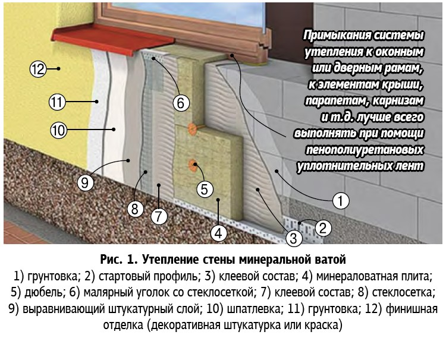

Утепляем дом минеральной ватой
Минеральная вата – универсальный утеплитель, который, благодаря довольно широкому ассортиментному списку, может применяться при санации ограждающих конструкций зданий, выстроенных из любого материала.
Различные по плотности маты и рулоны каменной ваты позволяют утеплять стены, перекрытия, пол по грунту и кровлю. Надо только правильно выбирать вид и плотность продукта, тогда и результат будет тем, на который вы рассчитываете.
При утеплении здания важно помнить, что не существует универсального утеплителя. Для каждого элемента (кровля, стены или фундамент) необходим теплоизоляционный материал со специфическими свойствами.
Что касается фасадов, то имеется три варианта утеплить стены: заложить утеплитель внутрь стены (каркасное строительство) либо утеплить готовые стены снаружи или внутри помещения. Мы уже неоднократно писали о том, что внутри помещений утеплять стены не стоит, так как в итоге это приведет к весьма серьезным негативным последствиям, поэтому данный вид утепления даже не будем рассматривать.
Более правильно располагать минеральную вату снаружи фасада. Делать это можно двумя способами: в первом случае утеплитель вкладывается в набитую на стены обрешетку (этот способ подходит преимущественно для деревянных домов), во втором – крепится к стене при помощи дюбелей и клея (для каменных строений). Использование во втором способе утепления «мокрых» процессов, связанных с оштукатуриванием фасадов, дало название «мокрый» способ утепления.
Преимущество «сухого» способа утепления стен в том, что работы можно производить в любое время года. По фасаду здания делают обрешетку из бруска и заполняют образовавшееся пространство утеплителем. Сверху вся эта конструкция накрывается ветрозащитными пленками, чтобы вату не продувало ветром, и закрывается отделочными материалами: сайдинг, блокхаус, имитация бруса и т.п.

Утепление фасада каменного дома
В начале работ нужно провести подготовку поверхности: снять все посторонние или вспомогательные предметы с фасада, коммуникации или подготовить их для зашивки в систему утепления. Конечно, если это не перечит СНиПам. Идти наперекор строительным правилам не стоит, как правило, их положения дают возможность обезопасить себя от проблем в будущем.
Системы слива также необходимо снять и монтировать их уже после финишной отделки, при этом нужно быть очень аккуратными и не повредить их.
В процессе подготовки рабочей поверхности проследите за тем, чтобы из стены не торчали лишние предметы: ржавая арматура, гвозди и другой черный металл, ликвидируйте высолы и наплывы межшовного раствора.
Торчащие куски арматуры, металлической сетки и другие металлы нужно извлечь, потому что в процессе температурных колебаний образуется водный конденсат, который при взаимодействии с металлами вызывает коррозию. Если не удалить их, то вся ржавчина проступит наверх, испортив внешний вид штукатурки, но и это не самое главное – процессы коррозии внутри системы постепенно снизят ее эффективность.
Удалите плесень и грибок, мох и других обитателей микрофлоры. Следует снять и старую штукатурку, особенно в тех местах, где она еле держится.
После того как вы подготовили площадку, выделите для себя небольшой тренировочный участок стены. Это только кажется, что производить работы просто, на самом деле прежде не мешает потренироваться.
Далее намечаем карту провесов, то есть разбиваем рабочую площадь на зоны, в которых будут установлены горизонтальные, вертикальные и диагональные провесы. В качестве них можно использовать обычную веревку.
Провес устанавливается следующим образом: высверлите одно отверстие в верхней точке стены (это будет вертикальный провес), а другое параллельно снизу, вбейте туда анкерный дюбель соответствующего диаметра, выставьте расстояние от стены на толщину утеплителя + 1 см запаса на клеевой раствор и сильно натяните шнур. Аналогично расставьте провесы по всей поверхности стены, с шагом 80–90 см.
Аналогичным образом сделайте как минимум два горизонтальных провеса, один снизу, другой сверху разбивочной площади, можно сделать еще парочку диагональных провесов.
Система провесов – это не пустая трата времени, она поможет изучить рельеф стены, так как практически всегда оказывается, что фасад – вовсе не ровная плоскость, а скопление ям и бугорков.
Возьмите рулетку и пройдитесь по каждому провесу, сняв замеры минимум через 50 см, это стандартная высота листа утеплителя. Более или менее нормальные колебания размещаются в диапазоне ±5-10 мм, но бывает, эти цифры доходят и до +100. К таким сюрпризам надо быть готовым.
Имея такую карту, в процессе приклейки утеплителя не нужно будет каждый раз прикладывать
уровень, нужно только первый ряд выставить точно по горизонтали, а дальше ориентироваться
по провесам, лишь время от времени контролировать плоскость уровнем или правилом.
Последний этап подготовительной работы – грунтование поверхности. Удобнее провести эту процедуру до монтажа провесов. В качестве инструмента удобнее использовать кисть-макловицу.
Что касается выбора материала для грунтования, то в этом случае надо исходить из данных самой стены. Это может быть просто грунтовка глубокого проникновения либо имеющая противогрибковые добавки.
Начало работ
Работу начинаем с установки цокольной планки, которая обеспечит поддержку первого ряда и регулирует зазор между утеплителем и стеной.
Чтобы установить профиль, определите нулевую точку с помощью водяного уровня. Затем отбивочным шнуром отметьте линию по всей длине стены. Теперь возьмите клей для минваты и сетку, запустите сетку на 10 см выше намеченной линии и закрепите ее клеем. Затем приложите цокольную планку, с помощью перфоратора проделайте отверстие и закрепите профиль дюбелем.
Кладем первый ряд
В работе используйте только специальный клей, разведенный точно по инструкции!
Раствор наносится на всю поверхность плиты, затем разглаживается гребенчатым шпателем. Наносить клей необходимо именно таким способом, а не точечным. Это позволит плите нормально схватиться с поверхностью стены и добавит ей жесткости. Очень внимательно отнеситесь к монтажу первого ряда – скривите здесь, потом очень трудно будет исправить.
Если стена имеет значительные неровности, то она должна быть выровнена еще до наклеивания теплоизоляционных плит, причем срок между этими процессами должен быть не менее недели. Выравнивание неровностей во время наклеивания плит приведет к недостаточной прочности клеевого соединения.
Следите за тем, чтобы между плитами не было щелей – это мостики холода, которые сведут ваши усилия на «нет». Минплита должна идеально соприкасаться друг с другом. Если все же напортачили, закройте щели вставками аккуратно подточите.
Монтаж плит производится с перевязкой швов не менее 100 мм, в процессе монтажа желательно использовать преимущественно цельные плиты.
Отсутствие перевязки швов или мозаика из остатков плиты влекут за собой повышенную вероятность трещинообразования, а трещины на фасаде маленькими не бывают, они очень быстро растут и «размножаются» под воздействием влажности и температурных колебаний.
Старайтесь монтировать плиты без перепадов по высоте – резкие переходы в толщине армирующего слоя вызовут возникновение трещин в слое финишной штукатурки.
Укрепите плиту дюбелями, желательно композитными, с гвоздем из стекловолокна. Если не прикреплять их дюбелями, то из-за высокого веса минваты утепленный фасад обвалится или пойдут трещины.
Армирование
После того как плиты подстрахованы дюбелями, можно приступать к армированию. Этот этап необходим, чтобы укрепить конструкцию утепления и защитить саму минвату.
Вначале наносится первый слой клея на минеральную вату, потом в этот клей втапливается армирующая щелочестойкая сетка (стеклосетка) и на нее наносится второй слой клея. Сетка наносится на фасад с нахлестом в 10 см. В местах, где сетка на сетку не находит, штукатурный слой трескается уже через пару часов, соответственно, также будет выглядеть и декоративная штукатурка.
После того как армирующий слой просохнет, его выравнивают посредством нанесения шпатлевки и грунтуют специальными составами.
Финишное покрытие
Последним слоем при утеплении фасада идет декоративный слой – различные виды декоративной штукатурки (барашки, короеды и т.п.), а также фасадные краски. Главное назначение отделочного слоя – защита от осадков, ультрафиолета, ветра, различных химических веществ, содержащихся в воздухе и, конечно же, эстетика. Для того чтобы влага испарялась из утеплителя, декоративный слой должен обладать достаточной паропроницаемостью.

{kind=link}
{kind=link}